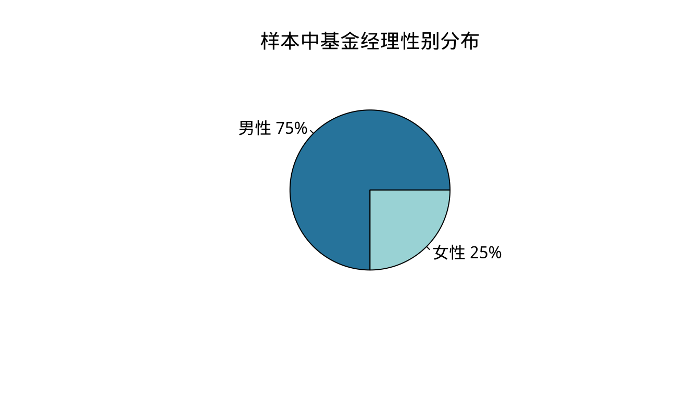
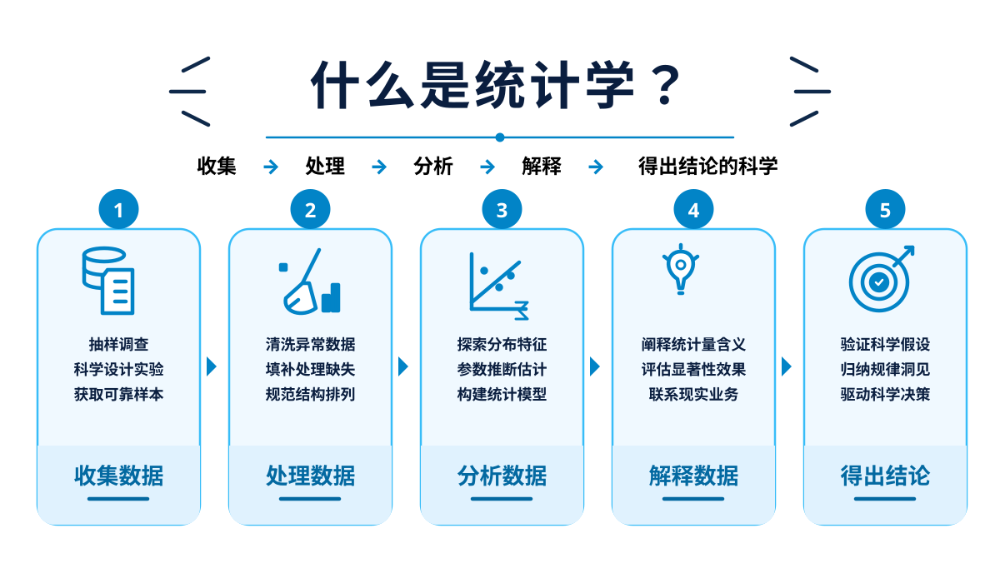
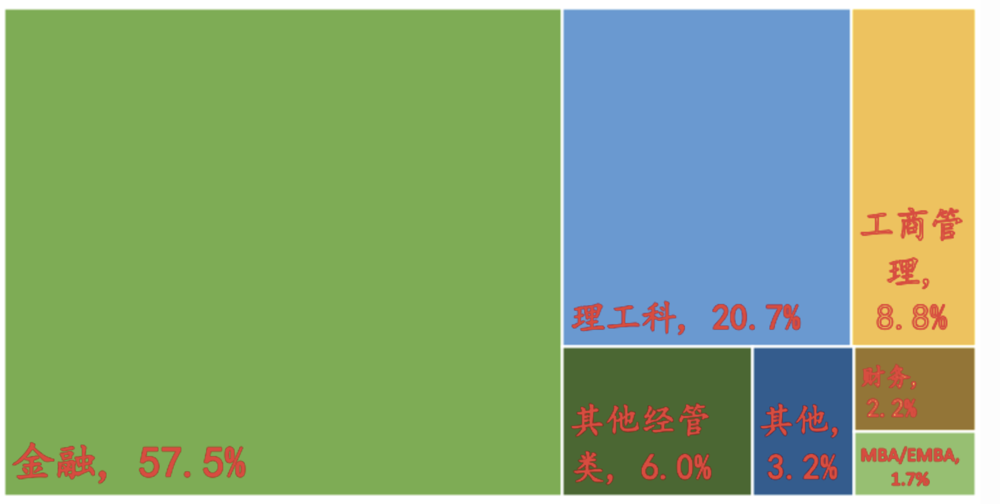
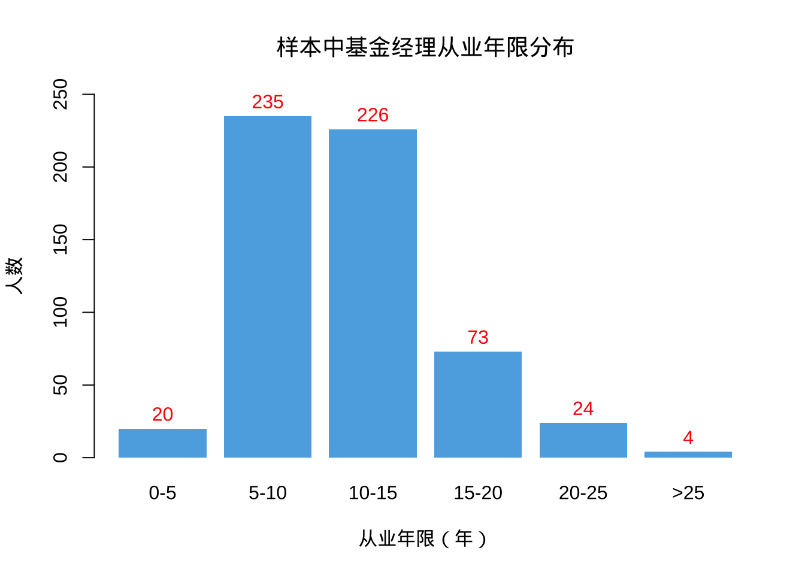
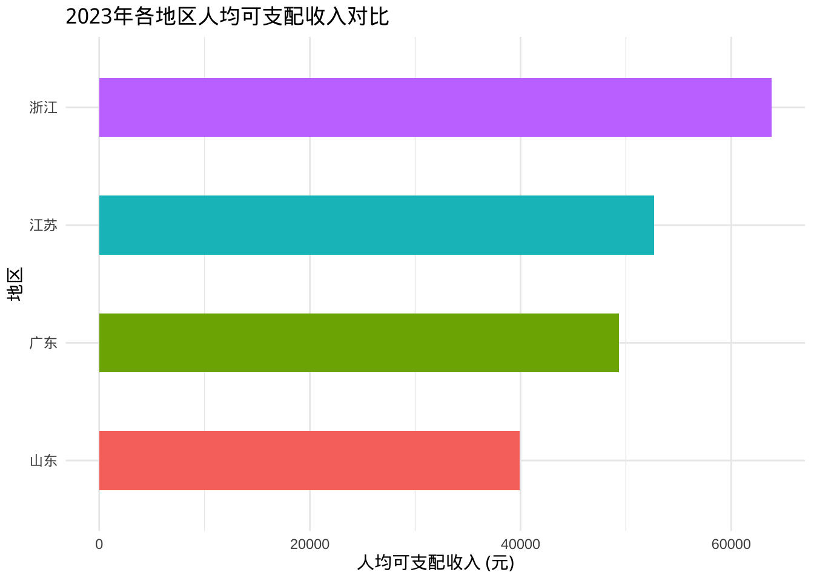
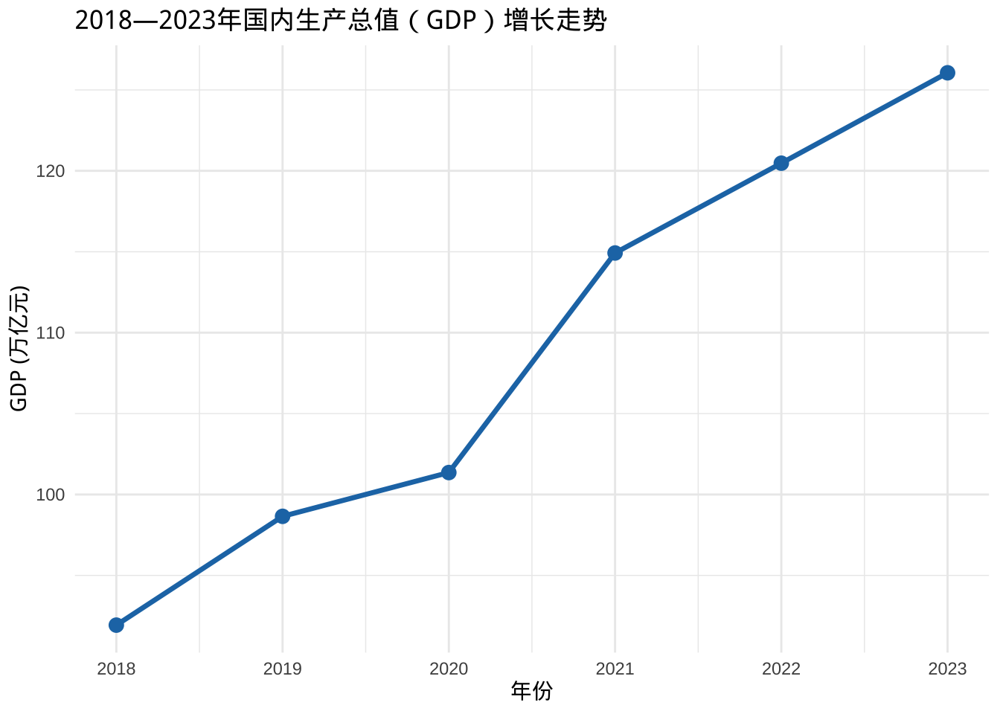
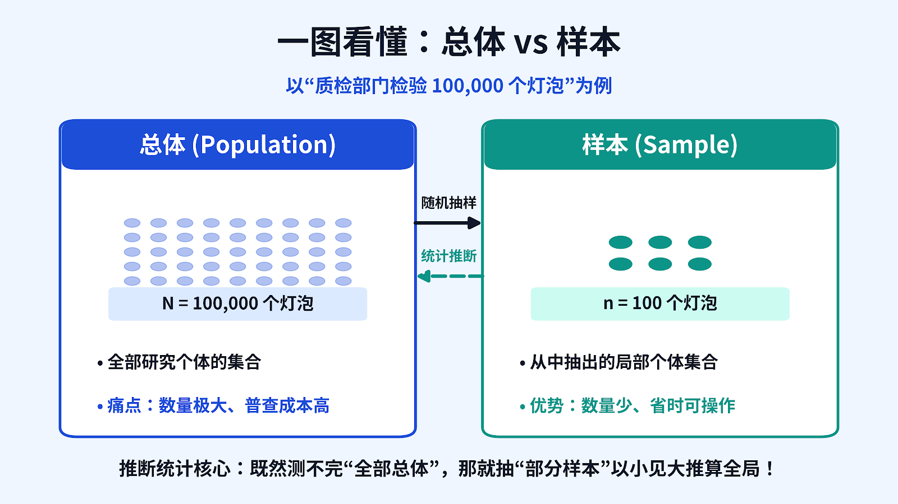
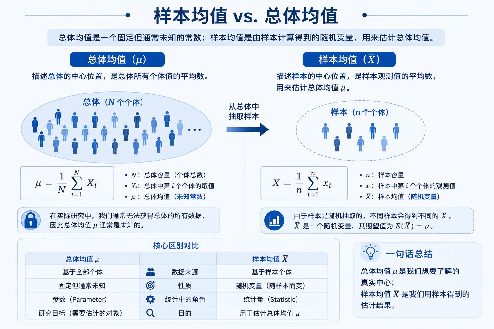
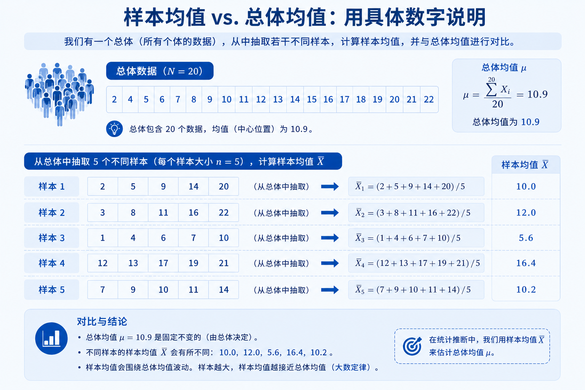

第1章 导论
1.1 什么是统计学？
Statistics
- 统计学是收集、处理、分析、解释数据并从数据中得出结论的科学。

统计分析步骤

统计分析方法分支

描述统计 Descriptive Statistics
用图表和概括性数字，对已经收集到的数据进行整理、汇总和展示，目的是清晰地描述数据的基本特征。
关键特点：
只针对手头已有的数据（样本或总体）
不涉及对未知总体的推断
结果是确定的，不带有不确定性
推断统计 Inferential Statistics
根据样本数据的信息，对总体的未知特征进行估计、检验或预测，并给出结论的可靠程度。
关键特点： - 从样本推断总体
结论带有不确定性（用概率来度量）
需要抽样分布、置信区间、假设检验等工具
描述统计 vs 推断统计对比
| 对比维度 | 描述统计 | 推断统计 |
|---|---|---|
| 研究对象 | 已有的数据（样本或总体） | 通过样本推断总体 |
| 目的 | 整理、汇总、展示数据特征 | 估计、检验、预测总体特征 |
| 结论性质 | 确定性描述 | 统计推断，有不确定性 |
| 是否需要抽样分布 | 不需要 | 需要 |
| 典型问题 | “这组数据的平均分是多少？” | “全体学生的平均分大概是多少？” |
| 对应章节 | 第3章，第4章 | 第6–11章、第13章等 |
举例：大学生“每日手机屏幕使用时长”
研究场景
希望掌握全校 40,000名本科生平均每天在手机屏幕上花费的时长
- 描述统计：
随机抽取 300 名学生并采集其手机“屏幕时间”数据，计算得出该样本的平均屏幕时间为 6.2 小时/天，并绘制直方图展示分布形态。
聚焦于样本本身：仅对已收集到的 300 个观测值进行统计计算与可视化呈现。
- 推断统计：
利用这 300 人的样本数据推算，以 95% 置信度估计“全校 1.5 万名学生的总体平均屏幕时间在 5.9 至 6.5 小时之间”；同时执行假设检验，判断“全校总体均值是否显著超过5小时”。
从局部推向全局：以样本统计量为依据，对未知的全校总体参数作出推断。
统计分析实例：基金经理特征分析
研究问题
中国公募基金经理群体的特征，例如：
- 性别比例如何？
- 年龄、学历、专业背景分布怎样？
- 从业经历、海外经历、资格证书持有情况如何？
- 这些特征与业绩表现之间有没有关系？
数据收集
问卷调查
数据库：CSMAR、RESSET
注意：研究期间、数据范围、字段含义、数值代码
从CSMAR和RESSET数据库收集到 600名 基金经理的数据（这是一个样本）。
描述统计能回答什么问题？
描述统计只描述这600名基金经理的情况，不延伸到全体基金经理。
1. 性别分布
- 男性：75%
- 女性：25%
2. 学历分布
学历 | 人数 | 百分比 |
博士后 | 2 | 0.3% |
博士 | 53 | 8.8% |
硕士 | 521 | 86.8% |
本科 | 24 | 4.0% |
总计 | 600 | 100% |
博士后 | 2 | 0.3% |
博士 | 53 | 8.8% |
硕士 | 521 | 86.8% |
本科 | 24 | 4.0% |
总计 | 600 | 100% |
3. 专业背景分布
- 金融：57.5%
- 理工科：20.7%
- 工商管理：8.8%
- 其他经管类：6.0%
- 其他：3.2%
- 财务：2.2%
- MBA/EMBA：1.7%

4. 毕业院校与证书
毕业院校
| 毕业院校 | 比重 |
|---|---|
| 985高校 | 58.8% |
| 211高校 | 23.0% |
| 海外高校 | 17.0% |
持有证书
| 持有证书 | 比重 |
|---|---|
| CFA | 5.7% |
| FRM | 1.3% |
| CPA | 1.2% |
5. 从业年限分布

描述统计的结论
在这600名基金经理中，男性占75%，硕士学历占86.8%，金融专业背景最多, 从业年限集中在5-15年的占75%。
这些结论只针对样本，不能直接说“全中国基金经理都是这样”。
推断统计方法能回答什么问题？
用这600人的样本，去回答关于全体中国公募基金经理的问题。
1. 参数估计类问题
- 全体基金经理中，女性的真实比例大概是多少？（区间估计）
- 全体基金经理的平均从业年限估计是多少？有多大把握？
2. 假设检验类问题
- 女性基金经理的比例是否显著低于50%？
- 有CFA证书的基金经理，业绩是否显著好于没有CFA的？
- 海外经历对基金业绩是否有显著影响？
- 不同学历（硕士 vs 博士）的基金经理，业绩是否有显著差异？
3. 相关与回归类问题
- 从业年限与业绩表现之间是否存在显著的相关关系？
- 在控制了其他因素后，性别是否还会影响业绩？
4. 具体可检验的问题举例
| 问题 | 可能使用的推断方法 |
|---|---|
| 女性基金经理比例是否真的低于30%？ | 单样本比例检验 |
| 有CFA和没有CFA的经理，平均收益率是否有差异？ | 两独立样本t检验 |
| 学历（本科/硕士/博士）对业绩是否有影响？ | 单因素方差分析（ANOVA） |
| 从业年限能否解释业绩的差异？ | 一元线性回归 |
| 性别与是否持有CFA证书是否独立？ | 卡方独立性检验 |
描述统计和推断统计
描述统计：把已经拿到的600人数据，用图表和数字说清楚。
推断统计：用这600人的结果，去回答“全体基金经理可能是什么样的”，并告诉别人这个回答有多可靠。
1.2 统计数据的类型
统计数据的类型
1.2.1 分类数据、顺序数据、数值型数据
1.2.2 观测数据和实验数据
1.2.3 截面数据和时间序列数据
数据类型 → 分析方法
- 单个变量：定量数据 or 定性数据？
- 两个变量：
- 定性数据 & 定性数据 → Chap 9
- 定性数据 & 定量数据 → Chap 10
- 定量数据 & 定量数据 → Chap 11
数据类型

按计量尺度划分

定性数据和定量数据
- 定性数据 qualitative data
- 分类数据：categorical data
- 顺序数据：ordinal data
- 定量数据 quantitative data
- 数值型数据：numeric data

常见误区
整数是离散，带小数就是连续
鞋码
身高
年龄
- 学历：小学 = 1，初中 = 2，高中 = 3，大学 = 4
- 受教育年限（数值型）
Note
数字代码本身不代表数量大小（分类/顺序数据），只有数值型数据可以进行数学运算。
| 维度 | 定性变量 | 定量变量 |
|---|---|---|
| 本质属性 | 品质特征（属于哪一类） | 数量特征（有多少/多大） |
| 主要子类 | - 无序分类：类别无先后（如：行业、性别） - 有序分类：类别有高低（如：满意度） |
- 离散变量：取值有限可列举（如：汽车产量） - 连续变量：区间内连续取值（如：温度、年龄） |
| 典型取值 | “制造业”、“通过”、“男/女”、“很好” | 20万元、38.5℃、1000台 |
| 数学运算 | 不能进行加、减、求平均等算术运算 | 可直接进行加、减、乘、除及求均值等运算 |
| 常用统计方法 | 频数（频率）分布、列联表、卡方检验 | 计算均值、方差、做参数估计与假设检验 |
能否做“有意义的加减运算”？
拿到一个变量时，不要先看它是不是用数字表示的，先问自己一个问题：“把这些取值加起来算个平均值，在业务上具备现实意义吗？”
如果毫无意义（例如算身份证号或工号的均值）：属于定性变量。
如果有实际意义（例如计算平均月薪或平均气温）：属于定量变量。
练习：定性数据还是定量数据？
一个消费调查中鞋子的品牌
一份试卷中答对的题数
一篇论文评定的等级
一篮球队员球衣上的数字
满意度等级：非常满意、比较满意、基本满意、比较不满意、非常不满意
满意度评分等级：1到5
截面数据
- 定义：截面数据（Cross-sectional data）是在相同或近似相同的时间点上收集的数据。
- 特点：数据通常是在不同的空间（或不同个体）上获得的，用于描述现象在某一特定时刻的状态、分布及差异。
截面数据
- 宏观经济：2023年我国各省份的地区生产总值（GDP）和人均可支配收入。
- 企业财务：某交易日收盘时，所有沪深300成分股的市盈率（PE）与换手率。
- 社会调查：某次问卷中，1000位受访者在接受调查当下的年龄、文化程度和消费满意度。
截面数据
| 地区 (个体/空间) | 时间 | GDP (亿元) | 人均可支配收入 (元) |
|---|---|---|---|
| 广东省 | 2023年 | 135,673 | 49,327 |
| 江苏省 | 2023年 | 128,222 | 52,674 |
| 山东省 | 2023年 | 92,069 | 39,890 |
| 浙江省 | 2023年 | 82,553 | 63,830 |
提示
时间固定在“2023年”，变化的是“不同地区”
截面数据
library(ggplot2)
# 构建截面数据集
df_cross <- data.frame(
region = c("广东", "江苏", "山东", "浙江"),
year = 2023,
income = c(49327, 52674, 39890, 63830)
)
# 绘制柱状图直观展示个体间的差异
ggplot(df_cross, aes(x = reorder(region, income), y = income, fill = region)) +
geom_col(width = 0.5, show.legend = FALSE) +
coord_flip() +
labs(
title = "2023年各地区人均可支配收入对比",
x = "地区",
y = "人均可支配收入 (元)"
) +
theme_minimal()
时间序列
- 定义：时间序列数据（Time Series Data）是在不同时间收集到的数据。
- 特征：这类数据是按时间先后顺序排列和记录的，主要用于观察和描述现象随时间推移而发生的变化情况与演变趋势。
- 与截面数据的区别：
- 时间序列数据：同一个体/对象，在不同的时间点追踪观察（纵向对比，侧重时间趋势）。
- 截面数据：同一或近似时间点，多个不同个体/对象（横向对比，侧重空间分布）。
时间序列举例
- 宏观经济：2010—2023年我国各年份的国内生产总值（GDP）、年度居民消费价格指数（CPI）。
- 金融市场：某只股票过去一年中每个交易日的日收盘价与成交量。
- 商业运营：某电商平台过去24个月每月的产品总销售额。
- 气象监测：某地气象监测站连续30天记录的日最高气温。
数据结构示例
| 年份（时间序列） | 国内生产总值 GDP（亿元） | 比上年增长（%） |
|---|---|---|
| 2018年 | 919,281 | 6.75 |
| 2019年 | 986,515 | 5.95 |
| 2020年 | 1,013,567 | 2.24 |
| 2021年 | 1,149,237 | 8.45 |
| 2022年 | 1,204,724 | 2.99 |
| 2023年 | 1,260,582 | 5.20 |
提示
观测对象固定为我国经济总量，记录时间按自然年度依次排列。
可视化分析示例
在时间序列分析中，通常使用折线图（Line Chart）来呈现随时间推移的动态波动与发展趋势。
library(ggplot2)
# 构建时间序列数据集
df_ts <- data.frame(
year = 2018:2023,
gdp = c(919281, 986515, 1013567, 1149237, 1204724, 1260582)
)
# 绘制折线趋势图
ggplot(df_ts, aes(x = year, y = gdp / 10000)) +
geom_line(color = "#1f77b4", linewidth = 1.2) +
geom_point(color = "#1f77b4", size = 3) +
scale_x_continuous(breaks = 2018:2023) +
labs(
title = "2018—2023年国内生产总值（GDP）增长走势",
x = "年份",
y = "GDP (万亿元)"
) +
theme_minimal()
1.3 基本概念
基本概念
- 总体
- 样本
- 参数
- 统计量
总体和样本
总体 (population)
- 所研究的全部个体的集合。总体中的每一个个体也称为元素。
- 有限总体：范围能够明确确定，且元素的数目是有限的。
- 无限总体：所包括的元素是无限的，不可数的。
样本 (sample)
- 从总体中抽取的一部分元素的集合。
- 样本是总体的子集。
- 样本容量或样本量 (sample size)
总体和样本


参数和统计量
参数 (parameter)
- 描述总体特征的概括性数字度量。
- 常数
统计量 (statistic)
- 描述样本特征的概括性数字度量。
- 随机变量
总体均值和样本均值


参数与样本的常用符号
| 总体参数 | 含义 | 样本统计量 |
|---|---|---|
| \(\mu\) | 平均数 | \(\bar{x}\) |
| \(\sigma\) | 标准差 | \(s\) |
| \(\pi\) | 比例 | \(p\) |
贝壳二手房示例：可提取哪些数据？数据类型？
- 房屋户型、建筑面积、朝向、装修情况、楼层……
- 挂牌时间、交易权属、房屋年限……
- 小区均价、建筑年代、建筑类型……
Important
思考：哪些是分类数据？顺序数据？数值型数据？截面还是时间序列？
课程概况
课程目标
- 培养统计直觉：看穿数据背后的故事
- 训练批判性思维：不被数据欺骗，学会质疑
- 熟练运用工具：
- Excel：从零到精通的数据整理
- R：掌握编程语言，打开数据科学大门
- SPSS：点点鼠标，让复杂分析变简单
教学形式
理论讲授
新课精讲
随堂小测：即时反馈，检验学习效果（不用紧张，是帮你查漏补缺！）
实践训练
作业**（让你真正学会）
动手上机：用 Excel/R 处理真实数据
手工计算：理解算法本质
独立完成：建立自己的知识体系
小组作业
选择你感兴趣的话题
团队合作：分工、讨论、碰撞
期末汇报：展示成果
真实数据，真实问题，真实解决方案
学习方法
紧跟课堂，高效吸收
课堂是黄金时间，不要浪费
预习 → 听讲 → 复习，三步走
多维参与，知行合一
📝 独立作业：巩固基础
👥 小组协作：学会沟通与合作
🔬 前沿拓展：
数据可视化
机器学习
AI工具
保持好奇，学以致用
问为什么：为什么要这样计算？
想应用：我能用它做什么？
搞明白：数据说了什么，不说什么？
学术竞赛实践
“原来后浪们都在B站学习”——大学生B站学习满意度影响因素研究
“疫情停课不停学，教育变更不变质”——大学生“云”课堂学习效果及满意度分析
参考教材
- 《商务与经济统计》（原书第13版）
- 戴维 R. 安德森 等著，机械工业出版社
- Statistics for Business and Economics (8th Edition)
- David R. Anderson et al., China Machine Press
第1章重点
- 数据类型：
- 分类 / 顺序 / 数值型数据
- 时间序列 / 截面数据
- 总体 / 样本
- 参数 / 统计量